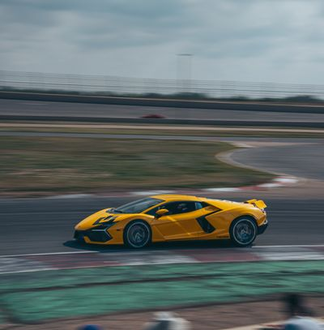

Automóviles Lamborghini

Diseño inspirado en los superdeportivos italianos.
Lamborghini es conocida por sus diseños
agresivos y motores de gran potencia.
Modelos destacados
Características
- Diseño
- Diseño agresivo y aerodinámico.
- Motor
- Motores de alto rendimiento.
- Velocidad
- Excelente capacidad de aceleración.
Contenido multimedia